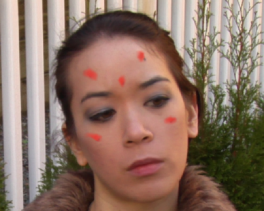
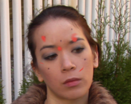

对于短序列或运动和细节最小的序列，您的更正应该很好地传播。如果你看到你的修正随着时间的推移不正确地扭曲，你可以使用矢量扭曲 帧距离 控制按摩结果。
提示:
翘曲依赖于来自 SmartVector 的良好向量和 vectordisharet 中的良好参考框架。在做其他事情之前，尝试增加
矢量细节
控制 SmartVector 节点并重新渲染向量。您也可以尝试选择不同的
参考框架
在矢量扭曲节点的控件中。
请参阅
生成运动矢量
或
将运动向量应用于源
欲了解更多信息。
默认值为 0 帧距离 ,Vectordisteret 计算序列中每个帧的扭曲，即帧 1-2 、 2-3 、 3-4 、 4-5，依此类推。对于靠近的帧 参考框架 随着帧之间的大量移动，这是一件好事，因为扭曲需要在帧之间发生显著变化。然而，对于远离的帧 参考框架 帧之间几乎没有移动，这不是必需的，因为扭曲不会在帧之间发生显著变化。
增加 帧距离 基本上减少了之间计算的扭曲数 参考框架 和当前帧。在示例序列中, 参考框架 设置为 57，230 帧的扭曲已经开始滑动 帧距离 设置为 0 。增加 帧距离 效果很好，达到 2 左右，但是增加距离会扭曲太多。
|
|
 |
|
帧距离为 0 的扭曲。 |
与帧距离 2 的扭曲。 |
|
 |
|
|
与帧距离 4 的扭曲。 |
|
在某些情况下，任何调整都不会改善大量帧上的扭曲 -- 尤其是在序列中有很多移动或细节的情况下。请参阅 扭曲多个参考帧 有关如何使用多个矢量扭曲节点以最小化手动绘制工作的更多信息。
|
|